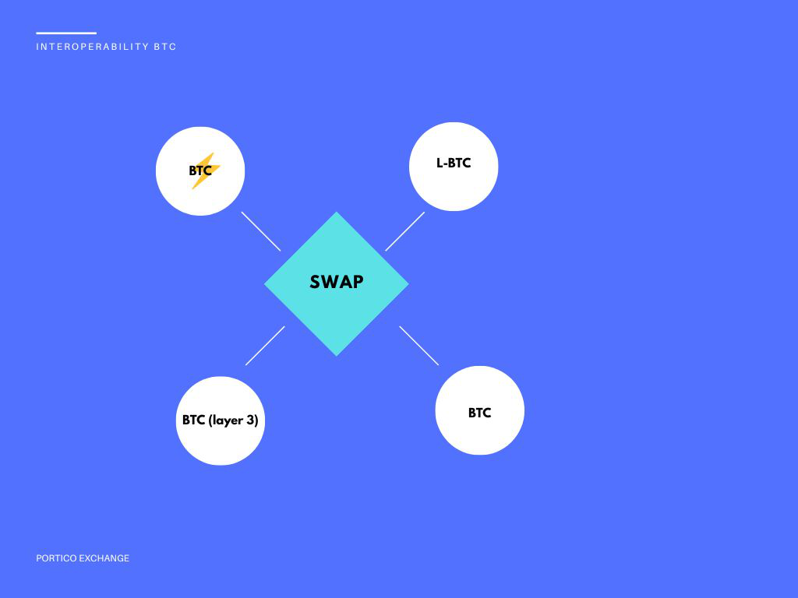
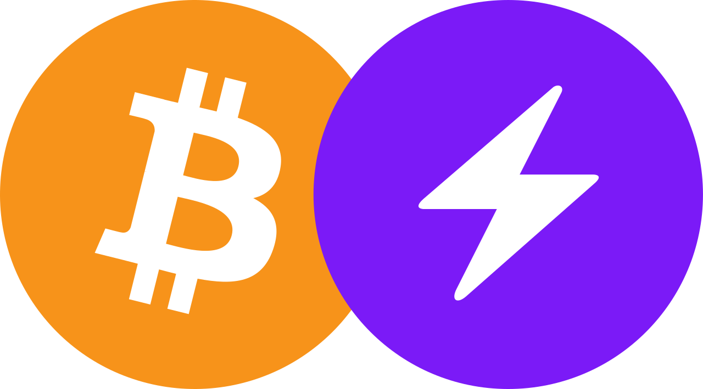

Portico Exchange is an Exchange Decentralized on Lightning Network
The Easiest Way to Swap between layers bitcoin and sidechains.
Dapp
How Portico works
For make Swap between chains different wil be necessary have HTLC(Hashed TimeLock), where alllow commucation with A and B. Example: USDT<>BTC or LBTC<>BTC
If you would hodl your own assets, if you would control your own private key in your wallet using LNURL with Alby or LN and native like Muun, BlueWallet.
Features: Liquid Network, Bitcoin (On Chain and Off Chain), USDT (ERC-20 and Lightning Network), Taproot, LNURL, RSK Network, RGB Network (layer 3), OmniBolt, etc.
That’s all. You can withdraw your assets at any time 24/7 and decentralized
Workflow

Advantages
Security by backed Layer 1

Faster by Ligthtning Network, layers and sidechains.
 Decentralized
Decentralized